Web Server Statistics for bpso.bt
Web Server Statistics for bpso.bt
Program started on Sat, Feb 28 2026 at 8:10 PM.
Analyzed requests from Fri, Dec 05 2025 at 6:19 PM to Sat, Feb 28 2026 at 8:04 PM (85.07 days).
Web Server Statistics for bpso.btProgram started on Sat, Feb 28 2026 at 8:10 PM.
Analyzed requests from Fri, Dec 05 2025 at 6:19 PM to Sat, Feb 28 2026 at 8:04 PM (85.07 days).
(Go To: Top | General Summary | Monthly Report | Daily Summary | Hourly Summary | Domain Report | Organization Report | Redirected Referrer Report | Failed Referrer Report | Referring Site Report | Browser Report | Browser Summary | Operating System Report | Status Code Report | File Size Report | File Type Report | Directory Report | Request Report)
Figures in parentheses refer to the 7-day period ending Feb 28 2026 at 8:10 PM.
Successful requests: 2,088 (168)
Average successful requests per day: 24 (23)
Successful requests for pages: 79 (0)
Failed requests: 1,559 (27)
Redirected requests: 41,775 (2,959)
Distinct files requested: 1,965 (161)
Distinct hosts served: 100 (2)
Data transferred: 4.63 megabytes (10.50 kilobytes)
Average data transferred per day: 55.77 kilobytes (1.50 kilobytes)
(Go To: Top | General Summary | Monthly Report | Daily Summary | Hourly Summary | Domain Report | Organization Report | Redirected Referrer Report | Failed Referrer Report | Referring Site Report | Browser Report | Browser Summary | Operating System Report | Status Code Report | File Size Report | File Type Report | Directory Report | Request Report)
Each unit ( ) represents 2 requests for pages or part thereof.
) represents 2 requests for pages or part thereof.
| month | #reqs | #pages | |
|---|---|---|---|
| Dec 2025 | 741 | 79 |   |
| Jan 2026 | 684 | 0 | |
| Feb 2026 | 663 | 0 |
Busiest month: Dec 2025 (79 requests for pages).
(Go To: Top | General Summary | Monthly Report | Daily Summary | Hourly Summary | Domain Report | Organization Report | Redirected Referrer Report | Failed Referrer Report | Referring Site Report | Browser Report | Browser Summary | Operating System Report | Status Code Report | File Size Report | File Type Report | Directory Report | Request Report)
Each unit () represents 2 requests for pages or part thereof.
| day | #reqs | #pages | |
|---|---|---|---|
| Sun | 313 | 18 | |
| Mon | 282 | 0 | |
| Tue | 294 | 0 | |
| Wed | 273 | 0 | |
| Thu | 267 | 0 | |
| Fri | 287 | 15 | |
| Sat | 372 | 46 |    |
(Go To: Top | General Summary | Monthly Report | Daily Summary | Hourly Summary | Domain Report | Organization Report | Redirected Referrer Report | Failed Referrer Report | Referring Site Report | Browser Report | Browser Summary | Operating System Report | Status Code Report | File Size Report | File Type Report | Directory Report | Request Report)
Each unit () represents 1 request for a page.
| hour | #reqs | #pages | |
|---|---|---|---|
| 0 | 125 | 3 | |
| 1 | 2 | 2 | |
| 2 | 125 | 1 | |
| 3 | 123 | 3 | |
| 4 | 9 | 5 | |
| 5 | 130 | 1 | |
| 6 | 117 | 2 | |
| 7 | 9 | 2 | |
| 8 | 126 | 2 | |
| 9 | 118 | 1 | |
| 10 | 12 | 5 | |
| 11 | 131 | 2 | |
| 12 | 119 | 4 | |
| 13 | 8 | 3 | |
| 14 | 148 | 6 | |
| 15 | 116 | 2 | |
| 16 | 7 | 3 | |
| 17 | 139 | 0 | |
| 18 | 123 | 5 | |
| 19 | 6 | 2 | |
| 20 | 127 | 5 | |
| 21 | 124 | 6 | |
| 22 | 16 | 10 | |
| 23 | 128 | 4 | |
(Go To: Top | General Summary | Monthly Report | Daily Summary | Hourly Summary | Domain Report | Organization Report | Redirected Referrer Report | Failed Referrer Report | Referring Site Report | Browser Report | Browser Summary | Operating System Report | Status Code Report | File Size Report | File Type Report | Directory Report | Request Report)
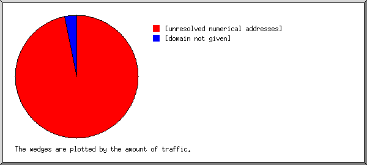
Listing domains, sorted by the amount of traffic.
| #reqs | %bytes | domain |
|---|---|---|
| 105 | 97.37% | [unresolved numerical addresses] |
| 1983 | 2.63% | [domain not given] |
(Go To: Top | General Summary | Monthly Report | Daily Summary | Hourly Summary | Domain Report | Organization Report | Redirected Referrer Report | Failed Referrer Report | Referring Site Report | Browser Report | Browser Summary | Operating System Report | Status Code Report | File Size Report | File Type Report | Directory Report | Request Report)
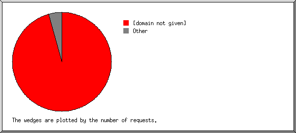
Listing the top 20 organizations by the number of requests, sorted by the number of requests.
| #reqs | %bytes | organization |
|---|---|---|
| 1983 | 2.63% | [domain not given] |
| 23 | 14.78% | 51 |
| 17 | 20.92% | 43 |
| 9 | 1.24% | 103 |
| 7 | 8.62% | 114 |
| 3 | 3.69% | 194.180 |
| 3 | 3.69% | 178.128 |
| 3 | 3.69% | 208.84 |
| 2 | 2.46% | 4 |
| 2 | 2.46% | 5 |
| 2 | 2.46% | 34 |
| 2 | 2.46% | 35 |
| 2 | 1.23% | 54 |
| 2 | 1.23% | 217.160 |
| 2 | 1.23% | 185.117 |
| 2 | 2.46% | 185.39 |
| 2 | 1.34% | 185.247 |
| 1 | 1.23% | 63.117 |
| 1 | 1.23% | 3 |
| 1 | 1.23% | 14 |
| 19 | 19.70% | [not listed: 19 organizations] |
(Go To: Top | General Summary | Monthly Report | Daily Summary | Hourly Summary | Domain Report | Organization Report | Redirected Referrer Report | Failed Referrer Report | Referring Site Report | Browser Report | Browser Summary | Operating System Report | Status Code Report | File Size Report | File Type Report | Directory Report | Request Report)
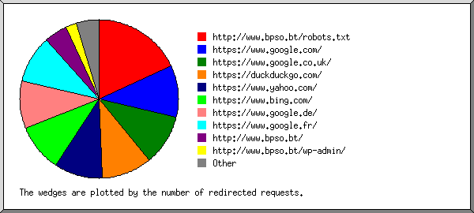
Listing the top 30 referring URLs by the number of redirected requests, sorted by the number of redirected requests.
(Go To: Top | General Summary | Monthly Report | Daily Summary | Hourly Summary | Domain Report | Organization Report | Redirected Referrer Report | Failed Referrer Report | Referring Site Report | Browser Report | Browser Summary | Operating System Report | Status Code Report | File Size Report | File Type Report | Directory Report | Request Report)
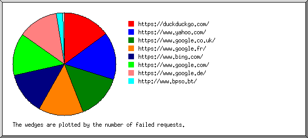
Listing referring URLs, sorted by the number of failed requests.
(Go To: Top | General Summary | Monthly Report | Daily Summary | Hourly Summary | Domain Report | Organization Report | Redirected Referrer Report | Failed Referrer Report | Referring Site Report | Browser Report | Browser Summary | Operating System Report | Status Code Report | File Size Report | File Type Report | Directory Report | Request Report)
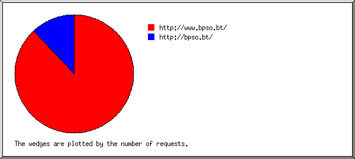
Listing referring sites, sorted by the number of requests.
| #reqs | site |
|---|---|
| 22 | http://www.bpso.bt/ |
| 3 | http://bpso.bt/ |
(Go To: Top | General Summary | Monthly Report | Daily Summary | Hourly Summary | Domain Report | Organization Report | Redirected Referrer Report | Failed Referrer Report | Referring Site Report | Browser Report | Browser Summary | Operating System Report | Status Code Report | File Size Report | File Type Report | Directory Report | Request Report)
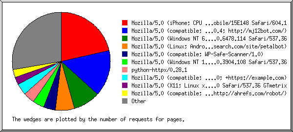
Listing browsers with at least 1 request for a page, sorted by the number of requests for pages.
| #reqs | #pages | browser |
|---|---|---|
| 17 | 17 | Mozilla/5.0 (iPhone; CPU iPhone OS 13_2_3 like Mac OS X) AppleWebKit/605.1.15 (KHTML, like Gecko) Version/13.0.3 Mobile/15E148 Safari/604.1 |
| 23 | 12 | Mozilla/5.0 (compatible; MJ12bot/v2.0.4; http://mj12bot.com/) |
| 7 | 7 | Mozilla/5.0 (Windows NT 6.1; Win64; x64) AppleWebKit/537.36 (KHTML, like Gecko) Chrome/126.0.6478.114 Safari/537.36 |
| 5 | 5 | Mozilla/5.0 (Linux; Android 7.0;) AppleWebKit/537.36 (KHTML, like Gecko) Mobile Safari/537.36 (compatible; PetalBot;+https://webmaster.petalsearch.com/site/petalbot) |
| 3 | 3 | Mozilla/5.0 (compatible; WP-Safe-Scanner/1.0) |
| 3 | 3 | Mozilla/5.0 (Windows NT 10.0; Win64; x64) AppleWebKit/537.36 (KHTML, like Gecko) Chrome/78.0.3904.108 Safari/537.36 |
| 3 | 3 | python-httpx/0.28.1 |
| 3 | 3 | Mozilla/5.0 (compatible; CMS-Checker/1.0; +https://example.com) |
| 2 | 2 | Mozilla/5.0 (X11; Linux x86_64) AppleWebKit/537.36 (KHTML, like Gecko) Chrome/142.0.0.0 Safari/537.36 GTmetrix |
| 4 | 2 | Mozilla/5.0 (compatible; AhrefsBot/7.0; +http://ahrefs.com/robot/) |
| 1 | 1 | Mozilla/5.0 (Windows NT 10.0; Win64; x64) AppleWebKit/537.36 (KHTML, like Gecko) Chrome/131.0.0.0 Safari/537.36 |
| 1 | 1 | cypex.ai/scanning Mozilla/5.0 (Macintosh; Intel Mac OS X 10_15_7) Chrome/126.0.0.0 Safari/537.36 |
| 1 | 1 | Mozilla/5.0 (compatible; Yahoo! Slurp China; http://misc.yahoo.com.cn/help.html\xa1\xb1) |
| 1 | 1 | Mozilla/5.0 (Windows NT 10.0; Win64; x64) AppleWebKit/537.36 (KHTML, like Gecko) Chrome/141.0.0.0 Safari/537.36 |
| 1 | 1 | Mozilla/5.0 (Windows NT 6.1; WOW64; Trident/7.0; yie11; rv:11.0) like Gecko |
| 2 | 1 | Mozilla/5.0 (iPhone; CPU iPhone OS 17_1_2 like Mac OS X) AppleWebKit/605.1.15 (KHTML, like Gecko) Version/17.1.2 Mobile/15E148 Safari/604 |
| 1 | 1 | Mozilla/5.0 (Windows NT 10.0; Win64; x64) AppleWebKit/537.36 (KHTML, like Gecko) Chrome/142.0.0.0 Safari/537.36 |
| 2 | 1 | Mozilla/5.0 (compatible; InternetMeasurement/1.0; +https://internet-measurement.com/) |
| 1 | 1 | AppleWebKit/534.46 (KHTML,like Gecko) Version/5.1 Mobile Safari/10600.6.3 |
| 1 | 1 | Mozilla/5.0 (X11; Linux x86_64) AppleWebKit/537.36 (KHTML, like Gecko) HeadlessChrome/109.0.5414.119 Safari/537.36 |
| 1 | 1 | Mozilla/5.0 (X11; Linux x86_64; rv:142.0) Gecko/20100101 Firefox/142.0 |
| 1 | 1 | Mozilla/5.0 |
| 1 | 1 | Mozilla/5.0 AppleWebKit/537.36 (KHTML, like Gecko) Chrome/123.0.6312.86 Safari/537.36 BitSightBot/1.0 |
| 1 | 1 | Mozilla/5.0 (Windows NT 6.1; WOW64; rv:57.0) Gecko/20100101 Firefox/57.0 |
| 2 | 1 | UrlSuMa.de/2.0 (Web Crawler; +https://UrlSuMa.de/bot.html) |
| 1 | 1 | DuckDuckBot/1.1; (+http://duckduckgo.com/duckduckbot.html) |
| 1 | 1 | Mozilla/5.0 (Windows NT 10.0; Win64; x64) AppleWebKit/537.36 (KHTML, like Gecko) Chrome/86.0.4240.75 Safari/537.36 |
| 1 | 1 | Mozilla/5.0 (Windows NT 10.0; Win64; x64) AppleWebKit/537.36 (KHTML, like Gecko) Chrome/142.0.7444.162 Safari/537.36 |
| 1 | 1 | Mozilla/5.0 (Windows NT 10.0; Win64; x64) AppleWebKit/537.36 (KHTML, like Gecko) Chrome/130.0.0.0 Safari/537.36 CCleaner/130.0.0.0 |
| 1 | 1 | Mozilla/5.0 AppleWebKit/537.36 (KHTML, like Gecko; compatible; GPTBot/1.3; +https://openai.com/gptbot) |
| 1 | 1 | Mozilla/5.0 (Windows; U; Windows NT 6.1; en-US; rv:1.9.1.5) Gecko/20091102 Firefox/3.5.5 (.NET CLR 3.5.30729) |
| 1 | 1 | Mozilla/4.0 (compatible; MSIE 6.0; Windows NT 5.1; FSL 7.0.6.01001) |
| 1993 | 0 | [not listed: 6 browsers] |
(Go To: Top | General Summary | Monthly Report | Daily Summary | Hourly Summary | Domain Report | Organization Report | Redirected Referrer Report | Failed Referrer Report | Referring Site Report | Browser Report | Browser Summary | Operating System Report | Status Code Report | File Size Report | File Type Report | Directory Report | Request Report)
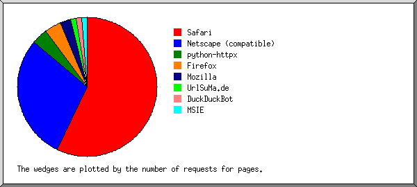
Listing browsers with at least 1 request for a page, sorted by the number of requests for pages.
| # | #reqs | #pages | browser |
|---|---|---|---|
| 1 | 47 | 45 | Safari |
| 27 | 26 | Safari/537 | |
| 19 | 18 | Safari/604 | |
| 1 | 1 | Safari/10600 | |
| 2 | 72 | 23 | Netscape (compatible) |
| 3 | 3 | 3 | python-httpx |
| 3 | 3 | python-httpx/0 | |
| 4 | 3 | 3 | Firefox |
| 1 | 1 | Firefox/57 | |
| 1 | 1 | Firefox/3 | |
| 1 | 1 | Firefox/142 | |
| 5 | 2 | 2 | Mozilla |
| 6 | 2 | 1 | UrlSuMa.de |
| 2 | 1 | UrlSuMa.de/2 | |
| 7 | 1 | 1 | DuckDuckBot |
| 1 | 1 | DuckDuckBot/1 | |
| 8 | 1 | 1 | MSIE |
| 1 | 1 | MSIE/6 | |
| 1957 | 0 | [not listed: 2 browsers] |
(Go To: Top | General Summary | Monthly Report | Daily Summary | Hourly Summary | Domain Report | Organization Report | Redirected Referrer Report | Failed Referrer Report | Referring Site Report | Browser Report | Browser Summary | Operating System Report | Status Code Report | File Size Report | File Type Report | Directory Report | Request Report)
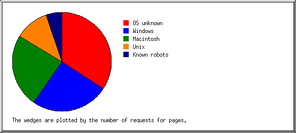
Listing operating systems, sorted by the number of requests for pages.
| # | #reqs | #pages | OS |
|---|---|---|---|
| 1 | 2031 | 27 | OS unknown |
| 2 | 20 | 20 | Windows |
| 10 | 10 | Unknown Windows | |
| 9 | 9 | Windows NT | |
| 1 | 1 | Windows XP | |
| 3 | 20 | 19 | Macintosh |
| 4 | 9 | 9 | Unix |
| 9 | 9 | Linux | |
| 5 | 8 | 4 | Known robots |
(Go To: Top | General Summary | Monthly Report | Daily Summary | Hourly Summary | Domain Report | Organization Report | Redirected Referrer Report | Failed Referrer Report | Referring Site Report | Browser Report | Browser Summary | Operating System Report | Status Code Report | File Size Report | File Type Report | Directory Report | Request Report)
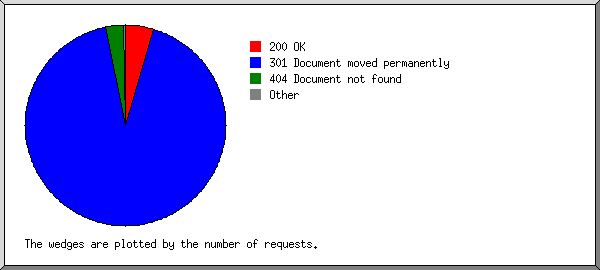
Listing status codes, sorted numerically.
| #reqs | status code |
|---|---|
| 2088 | 200 OK |
| 41775 | 301 Document moved permanently |
| 1414 | 404 Document not found |
| 145 | 4xx [Miscellaneous client/user errors] |
(Go To: Top | General Summary | Monthly Report | Daily Summary | Hourly Summary | Domain Report | Organization Report | Redirected Referrer Report | Failed Referrer Report | Referring Site Report | Browser Report | Browser Summary | Operating System Report | Status Code Report | File Size Report | File Type Report | Directory Report | Request Report)
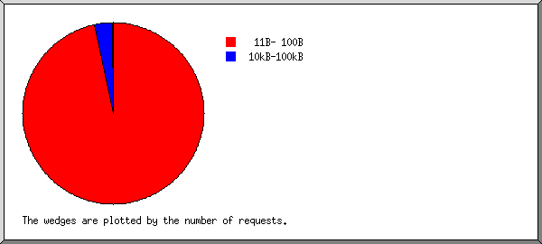
| size | #reqs | %bytes |
|---|---|---|
| 0 | 0 | |
| 1B- 10B | 0 | |
| 11B- 100B | 2008 | 2.65% |
| 101B- 1kB | 0 | |
| 1kB- 10kB | 1 | 0.11% |
| 10kB-100kB | 79 | 97.23% |
(Go To: Top | General Summary | Monthly Report | Daily Summary | Hourly Summary | Domain Report | Organization Report | Redirected Referrer Report | Failed Referrer Report | Referring Site Report | Browser Report | Browser Summary | Operating System Report | Status Code Report | File Size Report | File Type Report | Directory Report | Request Report)
Listing extensions with at least 0.1% of the traffic, sorted by the amount of traffic.
| #reqs | %bytes | extension |
|---|---|---|
| 79 | 97.23% | [directories] |
| 1983 | 2.63% | [no extension] |
| 1 | 0.11% | .ico |
| 25 | 0.03% | [not listed: 1 extension] |
(Go To: Top | General Summary | Monthly Report | Daily Summary | Hourly Summary | Domain Report | Organization Report | Redirected Referrer Report | Failed Referrer Report | Referring Site Report | Browser Report | Browser Summary | Operating System Report | Status Code Report | File Size Report | File Type Report | Directory Report | Request Report)
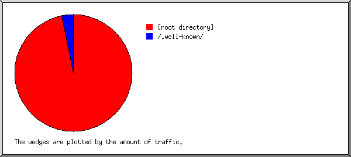
Listing directories with at least 0.01% of the traffic, sorted by the amount of traffic.
| #reqs | %bytes | directory |
|---|---|---|
| 105 | 97.37% | [root directory] |
| 1983 | 2.63% | /.well-known/ |
(Go To: Top | General Summary | Monthly Report | Daily Summary | Hourly Summary | Domain Report | Organization Report | Redirected Referrer Report | Failed Referrer Report | Referring Site Report | Browser Report | Browser Summary | Operating System Report | Status Code Report | File Size Report | File Type Report | Directory Report | Request Report)
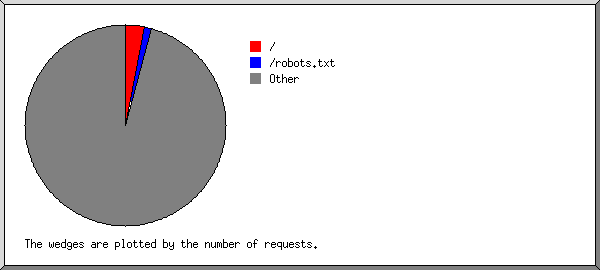
Listing files with at least 20 requests, sorted by the number of requests.
| #reqs | %bytes | last time | file |
|---|---|---|---|
| 79 | 97.23% | Dec/ 7/25 2:54 PM | / |
| 25 | 0.03% | Dec/ 7/25 2:20 PM | /robots.txt |
| 1984 | 2.74% | Feb/28/26 5:26 PM | [not listed: 1,963 files] |